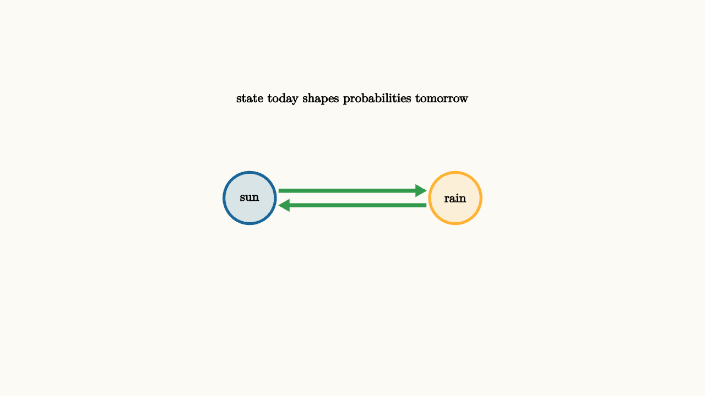

Markov Models Track Memory-Light Systems
A Markov model is useful when the present state is enough to describe the next-step probabilities. Tomorrow's weather may depend strongly on today's weather. If today's state already summarizes what matters, the model can ignore the longer history.
The phrase "enough to describe" is a modeling choice. For weather, a two-state model with sun and rain is deliberately crude. It may still teach the idea that rainy days tend to follow rainy days. If you need a real forecast, the state may include humidity, pressure, season, location, and recent trends. Markov thinking asks what information must be carried forward so the next step can be predicted reasonably.
For states $i$ and $j$, a transition probability is written
All transition probabilities form a matrix. Multiplying a probability vector by that matrix advances the distribution one step.
For example, a simple weather vector might begin as
meaning an 80 percent chance of sun and a 20 percent chance of rain today. After multiplying by the transition matrix, we get tomorrow's distribution. Multiplying again gives the day after tomorrow. The individual path stays random, while the distribution evolves deterministically through matrix multiplication.

source
background = [0.985, 0.98, 0.955, 1]
camera = Camera(4.8b)
mesh chain = block {
. fill{alpha{0.15} BLUE} stroke{BLUE, 3} center{[-1.4, 0, 0]} Circle(0.35)
. center{[-1.4, 0, 0]} Text("sun", 0.62)
. fill{alpha{0.15} ORANGE} stroke{ORANGE, 3} center{[1.4, 0, 0]} Circle(0.35)
. center{[1.4, 0, 0]} Text("rain", 0.62)
. color{GREEN} Arrow(start: [-1.0, 0.1, 0], end: [1.0, 0.1, 0])
. color{GREEN} Arrow(start: [1.0, -0.1, 0], end: [-1.0, -0.1, 0])
. center{[0, 1.35, 0]} Text("state today shapes probabilities tomorrow", 0.62)
}
"two state chain"
play Fade(0.6)Markov chains appear in habits, machine reliability, customer churn, sports possession, web navigation, and simple disease models. The state choice is the modeling art. If the state is too small, the Markov assumption fails. If the state is too detailed, the model becomes hard to estimate.
A habit model shows the tradeoff. Suppose the states are "exercised today" and "skipped today." If exercising today makes exercising tomorrow more likely, a Markov chain can describe momentum. But if weekends, injuries, sleep, and friends matter, the two-state model will miss patterns. The goal is not to include every detail. The goal is to include the details that change the next-step probabilities enough to matter.
source
param p = 0.25
background = [0.985, 0.98, 0.955, 1]
camera = Camera(4.8b)
let Matrix = |p| block {
. center{[0, 1.25, 0]} Text("transition matrix", 0.62)
. center{[0, 0.25, 0]} Tex("\\begin{bmatrix} 1-p & p \\\\ 0.35 & 0.65 \\end{bmatrix}", 0.72)
. fill{BLUE} center{[-1.2, -0.95, 0]} Rect([0.32, 0.55 + p])
. fill{ORANGE} center{[1.2, -0.95, 0]} Rect([0.32, 1.35 - p])
. center{[0, -1.55, 0]} Text("changing one transition changes the future mix", 0.62)
}
"low switch chance"
mesh mat = Matrix(p: $p)
play Fade(0.5)
"higher switch chance"
p = 0.75
mat = Matrix(p: $p)
play Lerp(1.0)Some Markov chains settle into a steady distribution. After many steps, the distribution changes very little. In symbols, a steady distribution $\pi$ satisfies
That equation says the distribution reproduces itself after one transition. It underlies ranking algorithms, queue models, and long-run reliability estimates.
The steady distribution also gives a teacher-friendly interpretation. If a machine moves between "working" and "repair" states, the long-run fraction of time in each state tells us availability. If a customer moves between "active" and "inactive" states, the long-run mix hints at churn pressure. The model turns repeated uncertain motion into a stable average picture.
The lesson to keep: a Markov model compresses history into state. Choose the state carefully, then transition probabilities describe how uncertainty moves.